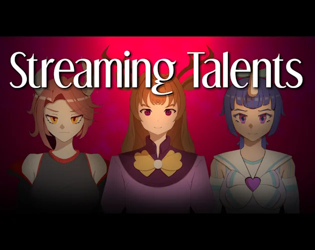
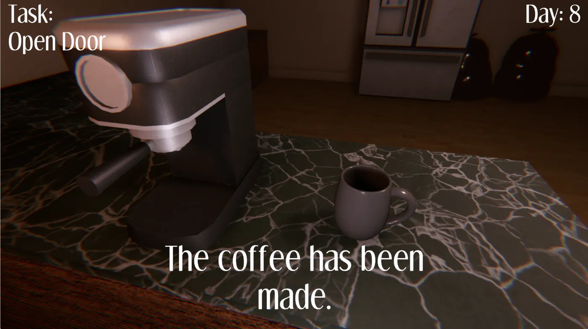

In development
Streaming Talents
A stream simulator about Zara, who's hired by an agency to chase her dream of becoming a VTuber. Choose which games to stream and who to collab with, and get to know the other VTubers in the community. I illustrated the VTuber sprites and main menu, wrote the story, texting and news across all eight in-game weeks, built the first-person real-life segment, and redesigned the streaming UI.
- Team
- 6 developers
- Engine
- Unity · Browser & Windows
- Genre
- Narrative simulation